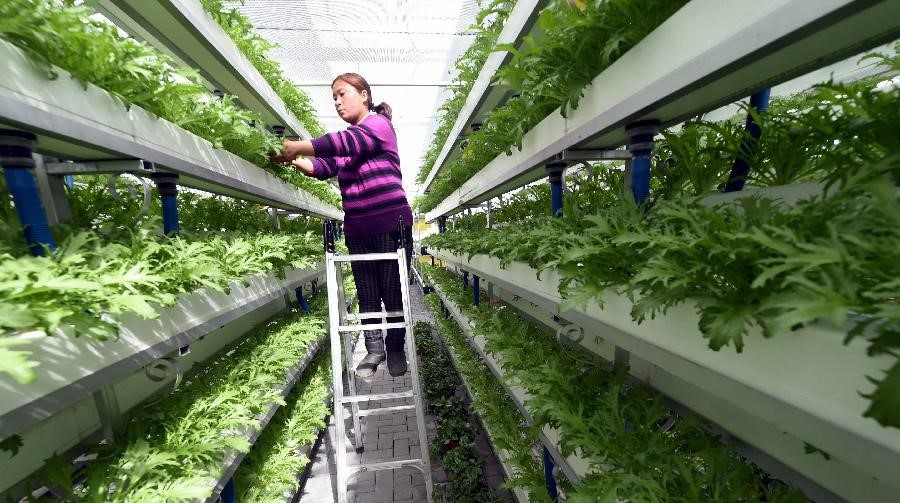
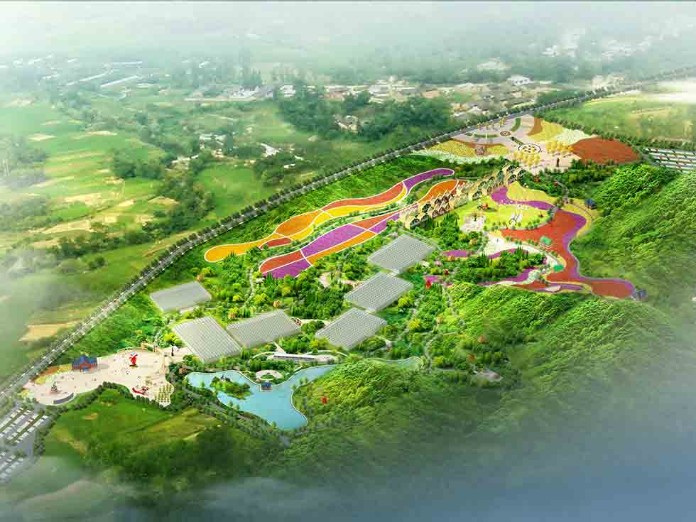
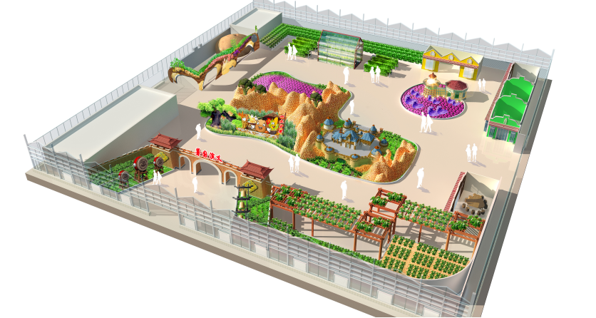
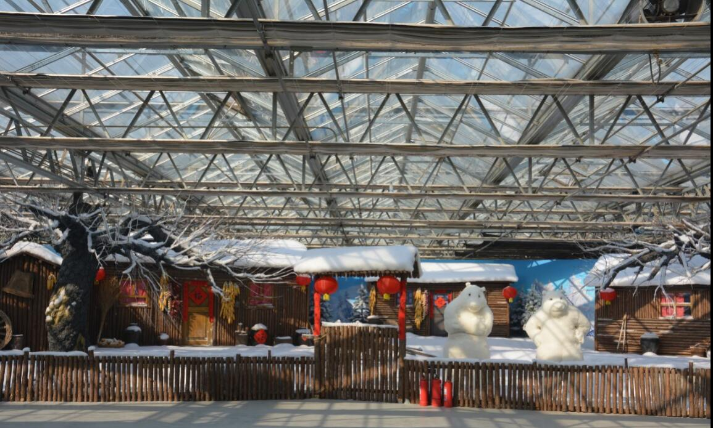
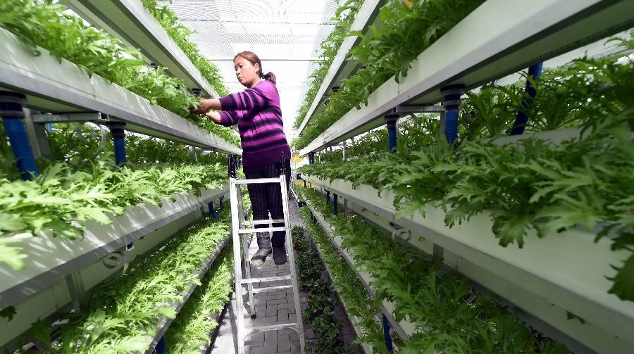
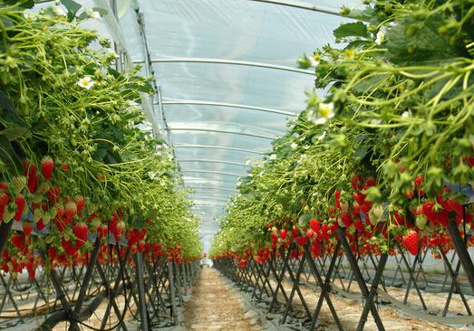

运营维护
时间：2017-02-22 16:04:06 浏览：545
北京中农四方农业规划设计研究院有限公司拥有专业的技术人员和专业合作伙伴，提供包括农业场馆维护，农业景观养护，游客管理，票务服务，宣传推广，活动策划等休闲农业项目的运营维护服务。
您当前的位置：首页>业务范围
北京中农四方农业规划设计研究院有限公司依托于中国农业大学、北京农学院等农业高校技术力量，在农业示范园区规划、农业休闲园区规划、农业观光园区规划、农业产业园区规划方面具有丰富的实战经验。
我们根据各地的农业区域优势和社会资源优势，坚持高效、生态、绿色、可持续发展的原则，在满足当地资源开发和主导产业发展的前提下，合理选择现代农业技术及产业模式，策划农业园区经营运作，保证项目实施可行，保证投资回报合理。
北京中农四方农业规划设计研究院有限公司拥有实力强大的专业设计团队，具有包括北京农业嘉年华，南京农业嘉年华等知名项目的设计经验。我们在农业园区景观设计，农业创意景观设计，农业休闲农庄景观设计，农业会展景观设计具有专业的实力和创新的思路。
北京中农四方农业规划设计研究院有限公司拥有专业的施工团队，已经成功施工过包括北京农业嘉年华，南京农业嘉年华，天津龙达生态园，顺义鲜花港北京菊花文化节等几十个项目。我们专业提供农业嘉年华、农业创意景观、农业休闲景观、农业科技温室、农业温室大棚等项目施工。
北京中农四方农业规划设计研究院有限公司拥有专业的技术人员和专业合作伙伴，提供包括农业场馆维护，农业景观养护，游客管理，票务服务，宣传推广，活动策划等休闲农业项目的运营维护服务。
北京中农四方农业规划设计研究院有限公司依托于中国农业大学、北京农学院等农业高校技术力量，拥有专业的园艺技术人员，提供蔬菜种苗、蔬菜景观栽培、气雾栽培、无土基质栽培、阳台农业等园艺技术服务。
